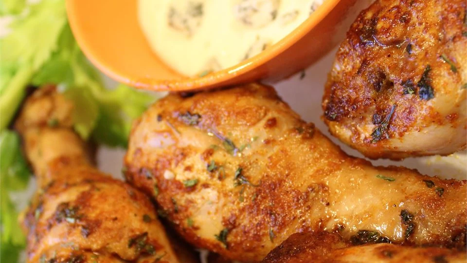

Chicken Legs

This is just like spicy chicken wings, only less work.
Cooks up nicely in the slow cooker! A quick meal that is super easy and oh
so yummy! For crispier chicken, bake in a 400 degrees F oven for the final 30
minutes.
Ingredients
- 12 chicken drumsticks
- 1 (5 ounce) bottle hot red pepper sauce
- ¼ cup butter, cubed
- ½ teaspoon garlic powder
- ½ teaspoon onion powder
- salt and pepper to taste
- 1½ cups blue cheese salad dressing
Steps
- Place the drumsticks in a slow cooker, and sprinkle evenly with pieces of
butter. Pour the hot sauce over the chicken, then season with garlic
powder, onion powder, salt and pepper. Cover, and cook on High for 3 hours,
or until tender. Serve chicken legs with blue cheese dressing on the side.